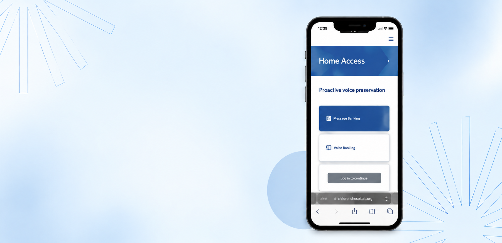

HEATHER DAVIES / PRODUCT & VISUAL DESIGN
Thoughtful design.
Clearer experiences.
Hi, I’m Heather. I explore how people, systems, and stories connect — and turn that curiosity into considered design.
DESIGN / OBSERVE / EXPLORESCROLL TO DISCOVER ↓
Selected work
01—03 / PRODUCT + VISUAL
BOSTON CHILDREN’S HOSPITAL · UX/UI
Making trusted
resources easier to find.
ALS Clinical Decision Tool
An accessible resource experience designed around clarity, navigation, and everyday use.
Explore the case study